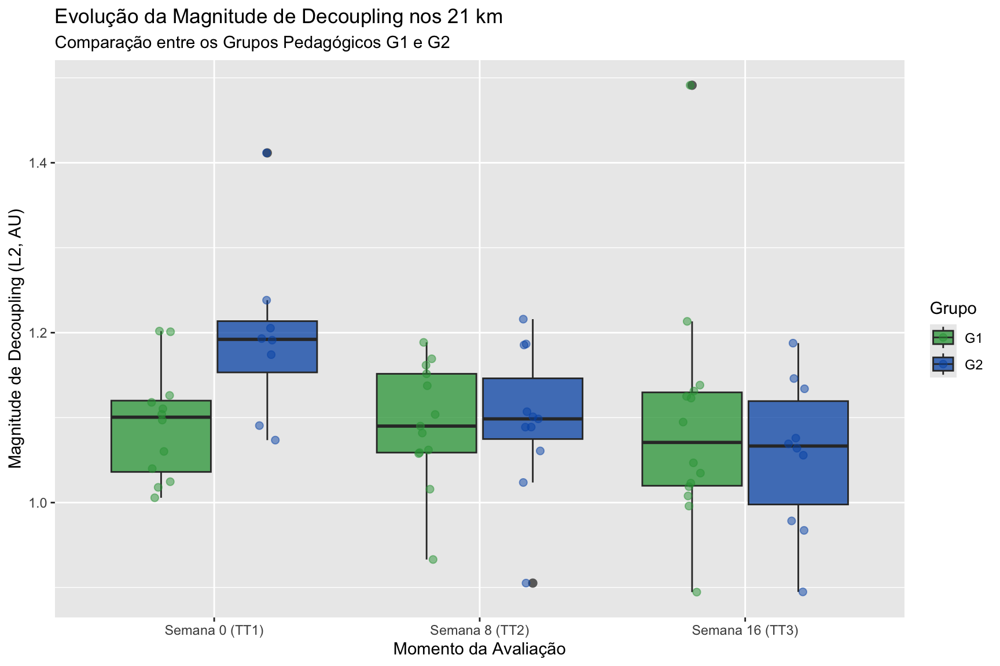
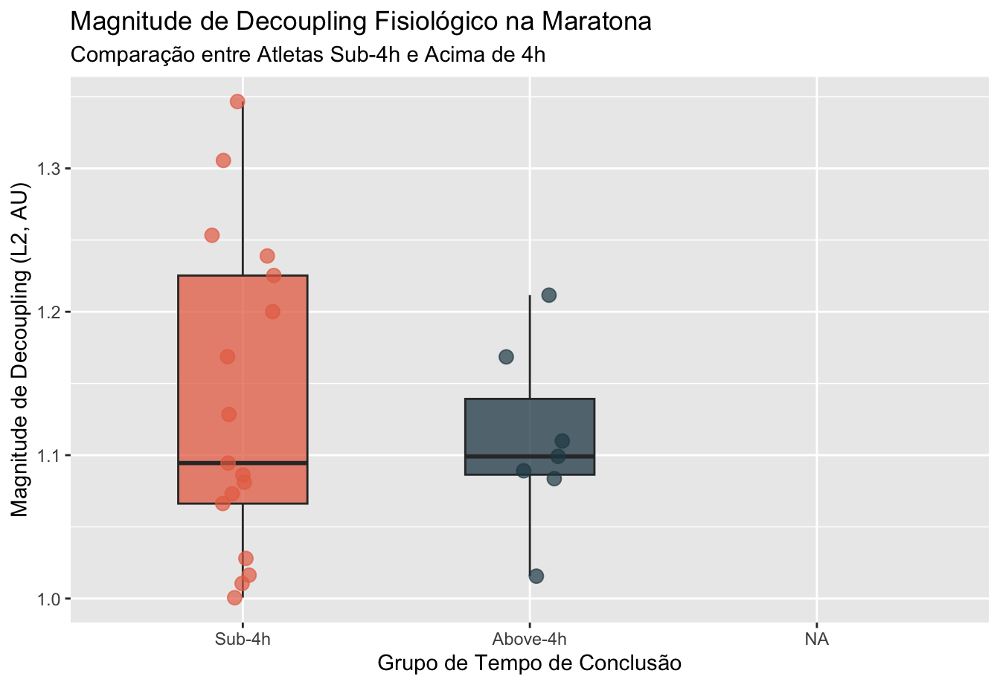
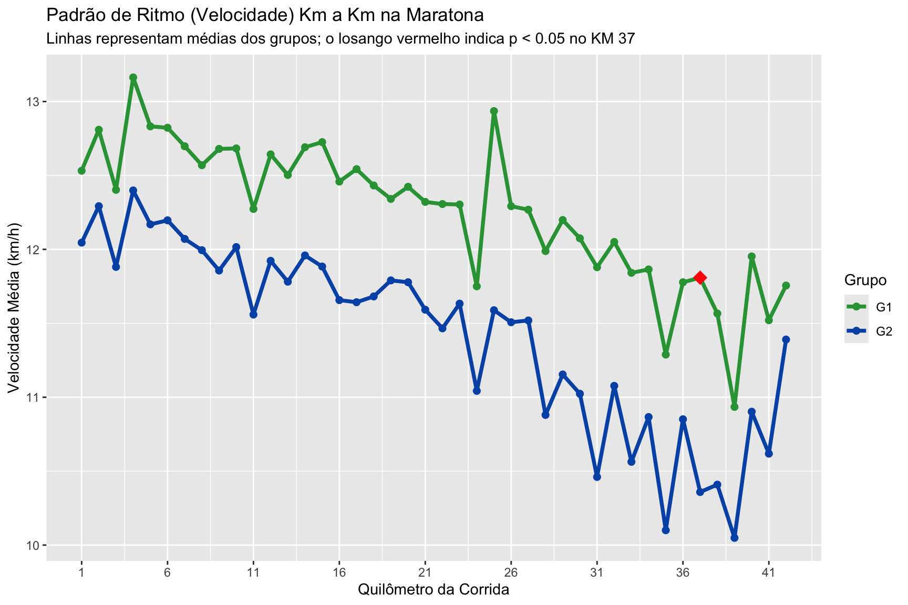

O treinamento para provas de longa duração (como a meia-maratona de 21 km e a maratona de 42 km) impõe demandas metabólicas e termorregulatórias severas ao organismo. Ao longo de uma corrida prolongada, atletas frequentemente experimentam o fenômeno de Deriva Cardiovascular (cardiovascular drift), que se traduz no desacoplamento aeróbio (decoupling fisiológico):
Carga Interna (Frequência Cardíaca - FC): Tende a subir continuamente com o passar do tempo devido ao aumento da temperatura corporal, perda hídrica e maior fadiga neuromuscular.
Carga Externa (Velocidade ou Ritmo): Tende a permanecer constante ou sofrer quedas à medida que a fadiga se acumula.
O que o Decoupling nos diz sobre o Atleta? A razão entre a carga interna relativa (%FCmáx) e a carga externa relativa (%Limiar) quantifica a durabilidade fisiológica:
Decoupling Baixo (< 5%): O atleta mantém eficiência mecânica estável, com excelente capacidade de sustentação do ritmo sem estresse cardíaco desproporcional.
Decoupling Moderado (5% a 10%): Resposta adaptativa normal esperada para esforços de média/longa duração.
Decoupling Elevado (> 10%): Perda severa de eficiência, indicando início precoce de fadiga e maior risco de quebra de ritmo (“muro”).
Adotando as metodologias de Smyth (2022) para a maratona e Wang (2026) para a meia-maratona, avaliamos o comportamento da magnitude do decoupling e o momento do seu início (onset), comparando os grupos pedagógicos (Grupo 1 vs. Grupo 2) e os grupos por tempo de conclusão (Sub-4h vs. Acima de 4h).
6 Carregamento e Preparação dos Dados
Para garantir robustez e evitar conflitos em tabelas com cabeçalhos duplos e colunas repetidas no Excel, o script R realiza a leitura bruta sem suposições rígidas de nomes, indexando os dados e classificando os atletas.
Mostrar o código
# 1. Carregar pacotes essenciaislibrary(readxl)library(tidyverse)library(knitr)library(kableExtra)excel_path <-"Estatísitca - Maratona, TT1, TT2, TT3, Z1_1 e Z1_2.xlsx"# 2. Carregar metadados dos sujeitos da aba de controledf_control <-read_excel(excel_path, sheet ="Controle dos sujeitos", col_names =FALSE)df_meta_raw <- df_control[3:nrow(df_control), ]colnames(df_meta_raw) <-paste0("Col", 1:ncol(df_meta_raw))# Limpar e classificar os atletas por tempo de maratona (Sub-4h vs Above-4h)df_meta <- df_meta_raw %>%mutate(Grupo =factor(Col1),Codigo = Col2,Nome = Col3,HRmax =as.numeric(Col10),VC_S4 =as.numeric(Col11),VC_S12 =as.numeric(Col12),L2_S0 =as.numeric(Col13),L2_S8 =as.numeric(Col14),L2_S16 =as.numeric(Col15),# O tempo no Excel é fração de dia; multiplicamos por 1440 para obter minutosMaratona_Minutos =as.numeric(Col4) *1440,Maratona_Horas = Maratona_Minutos /60,Tempo_Grupo =factor(ifelse(Maratona_Minutos <240, "Sub-4h", "Above-4h"), levels =c("Sub-4h", "Above-4h")) ) %>%filter(!is.na(Codigo)) %>%select(Codigo, Nome, Grupo, HRmax, VC_S4, VC_S12, L2_S0, L2_S8, L2_S16, Maratona_Minutos, Maratona_Horas, Tempo_Grupo)# Paletas de cores institucionais para os gráficoscolors_g <-c("G1"="#2ea043", "G2"="#0056b3")colors_t <-c("Sub-4h"="#e76f51", "Above-4h"="#264653")
A base de controle contempla 30 atletas avaliados: * Grupos Pedagógicos: 16 corredores no Grupo 1 (Treino A \(\rightarrow\) Treino B) e 14 corredores no Grupo 2 (Treino B \(\rightarrow\) Treino A). * Desempenho na Maratona: 20 corredores concluíram a prova abaixo de 4 horas (Sub-4h) e 7 corredores concluíram acima de 4 horas (Acima de 4h).
7 Mapeamento dos Limiares Fisiológicos (L2 e VC)
À medida que os atletas progridem nas semanas de treino, suas capacidades fisiológicas se modificam. Portanto, para calcular a carga externa relativa (%L2 ou %VC), cada avaliação de 21 km ou teste de zona 1 precisa ser pareada com o limiar avaliado no momento mais próximo:
Avaliação / Teste
Semana de Treino
Limiar L2 Utilizado
Limiar VC Utilizado
Racional Fisiológico
TT1
Semana 0 (Baseline)
L2_S0
VC_S4
L2 inicial do baseline; usa a 1ª medição de VC disponível (Semana 4).
Z1_1
Semana 4
L2_S0
VC_S4
L2 mais recente disponível (S0) e medição concorrente de VC (S4).
TT2
Semana 8 (Intermediário)
L2_S8
VC_S4
L2 reavaliado na Semana 8 e VC vigente desde a Semana 4.
Z1_2
Semana 12
L2_S8
VC_S12
L2 da Semana 8 e medição concorrente de VC da Semana 12.
TT3
Semana 16 (Final)
L2_S16
VC_S12
L2 final da Semana 16 e VC vigente desde a Semana 12.
Maratona
Semana 18 (Competição)
L2_S16
VC_S12
Limiares consolidados ao final do macrociclo de preparação.
7.0.1 Propriedade Matemática da Magnitude do Decoupling
Um achado metodológico muito relevante é que a Magnitude de Decoupling é matematicamente idêntica quer seja calculada em relação ao Limiar Anaeróbio (L2) ou à Velocidade Crítica (VC).
A magnitude é dada pela razão entre os índices de esforço do trecho final e do trecho inicial da corrida: \[\text{Magnitude} = \frac{\text{Razão}_{\text{Final}}}{\text{Razão}_{\text{Inicial}}} = \frac{\frac{FC_{\text{Final}} / FC_{\text{máx}}}{Vel_{\text{Final}} / Limiar}}{\frac{FC_{\text{Inicial}} / FC_{\text{máx}}}{Vel_{\text{Inicial}} / Limiar}} = \frac{FC_{\text{Final}} / Vel_{\text{Final}}}{FC_{\text{Inicial}} / Vel_{\text{Inicial}}}\]
Os fatores constantes (\(FC_{\text{máx}}\) e \(Limiar\)) cancelam-se na divisão. Consequentemente: * A Magnitude de Decoupling mede o desvio fisiológico líquido da relação FC/Velocidade. * O Início (Onset) do desacoplamento, por outro lado, varia entre L2 e VC, pois a detecção ocorre quando a razão acumulada ultrapassa o limiar absoluto fixado em \(1,025\) (\(2,5\%\) de deriva). Como a velocidade relativa em %VC é numericamente diferente da em %L2, esse limiar fixo é atingido em quilômetros distintos.
8 Extração e Estruturação das Métricas
Executamos a extração padronizada de todas as abas da planilha:
Os 5 Valores de Tukey (Mínimo, 1º Quartil, Mediana, 3º Quartil e Máximo) fornecem uma visão abrangente sobre a dispersão do desacoplamento aeróbio e a robustez dos atletas:
Mostrar o código
tukey_summaries <- df_analysis %>%group_by(Test) %>%summarise(L2_Mag_Min =fivenum(Mag_L2)[1],L2_Mag_Q1 =fivenum(Mag_L2)[2],L2_Mag_Med =fivenum(Mag_L2)[3],L2_Mag_Q3 =fivenum(Mag_L2)[4],L2_Mag_Max =fivenum(Mag_L2)[5],L2_Ons_Med =fivenum(Onset_L2)[3],VC_Ons_Med =fivenum(Onset_VC)[3] )kable(tukey_summaries, col.names =c("Avaliação", "Mínimo", "1º Quartil (Q1)", "Mediana", "3º Quartil (Q3)", "Máximo", "Onset L2 (Med)", "Onset VC (Med)"),digits =3, caption ="Tabela 1: Resumo dos 5 Valores de Tukey para Magnitude e Início do Decoupling") %>%kable_styling(bootstrap_options =c("striped", "hover", "condensed", "responsive"))
Tabela 1: Resumo dos 5 Valores de Tukey para Magnitude e Início do Decoupling
Avaliação
Mínimo
1º Quartil (Q1)
Mediana
3º Quartil (Q3)
Máximo
Onset L2 (Med)
Onset VC (Med)
Marathon
1.001
1.070
1.097
1.206
1.347
2
2.0
TT1
1.006
1.067
1.114
1.197
1.412
0
3.5
TT2
0.905
1.060
1.094
1.157
1.216
0
0.0
TT3
0.895
1.013
1.067
1.133
1.491
0
0.0
Z1_1
0.871
1.034
1.088
1.158
1.953
0
2.5
Z1_2
0.894
0.996
1.041
1.105
1.408
0
1.0
9.0.1 Principais Insights da Distribuição:
Maratona: A mediana de desacoplamento foi de \(1,097\) (aproximadamente \(9,7\%\) de deriva cardiovascular), considerada moderada segundo os critérios de Smyth (2022). No entanto, \(25\%\) dos atletas (acima do \(Q3 = 1,206\)) sofreram desacoplamento severo (\(> 20\%\)).
Início Precoce: Na Maratona, a mediana do onset de decoupling ocorreu no Segmento 2 (5 a 10 km), indicando que a deriva cardiovascular se inicia nos estágios iniciais para a maioria dos atletas amadores.
Evolução nos 21 km: A mediana da magnitude de decoupling nos testes de 21 km diminuiu de \(1,114\) no TT1 para \(1,094\) no TT2 e \(1,067\) no TT3, demonstrando ganho claro de eficiência e durabilidade cardiovascular ao longo das 16 semanas.
10 Comparação entre os Grupos Pedagógicos (G1 vs G2)
O estudo adotou um modelo cruzado onde o Grupo 1 (G1) realizou Treino A \(\rightarrow\) Treino B e o Grupo 2 (G2) realizou Treino B \(\rightarrow\) Treino A. Avaliamos se a ordem de aplicação dos treinos gerou diferenças na durabilidade:
Mostrar o código
group_comparisons <- df_analysis %>%group_by(Test) %>%do({ d <- . tt_mag_l2 <-tryCatch(t.test(Mag_L2 ~ Grupo, data = d)$p.value, error =function(e) NA_real_) wt_mag_l2 <-tryCatch(wilcox.test(Mag_L2 ~ Grupo, data = d)$p.value, error =function(e) NA_real_) tt_ons_vc <-tryCatch(t.test(Onset_VC ~ Grupo, data = d)$p.value, error =function(e) NA_real_)tibble(G1_Mag_L2 =mean(d$Mag_L2[d$Grupo =="G1"], na.rm =TRUE),G2_Mag_L2 =mean(d$Mag_L2[d$Grupo =="G2"], na.rm =TRUE),p_val_Mag = wt_mag_l2,G1_Ons_VC =mean(d$Onset_VC[d$Grupo =="G1"], na.rm =TRUE),G2_Ons_VC =mean(d$Onset_VC[d$Grupo =="G2"], na.rm =TRUE),p_val_Onset = tt_ons_vc ) })kable(group_comparisons, col.names =c("Avaliação", "Média G1 (Mag)", "Média G2 (Mag)", "p-valor (Mag)", "Onset Médio G1 (VC)", "Onset Médio G2 (VC)", "p-valor (Onset)"),digits =3, caption ="Tabela 2: Comparações Estatísticas de Decoupling entre G1 e G2 (Testes de Wilcoxon e t de Student)") %>%kable_styling(bootstrap_options =c("striped", "hover", "condensed", "responsive"))
Tabela 2: Comparações Estatísticas de Decoupling entre G1 e G2 (Testes de Wilcoxon e t de Student)
Avaliação
Média G1 (Mag)
Média G2 (Mag)
p-valor (Mag)
Onset Médio G1 (VC)
Onset Médio G2 (VC)
p-valor (Onset)
Marathon
1.119
1.143
0.886
3.071
3.273
0.857
TT1
1.092
1.197
0.031
2.333
5.375
0.033
TT2
1.093
1.097
0.776
2.077
3.455
0.355
TT3
1.096
1.057
0.841
1.786
1.455
0.770
Z1_1
1.114
1.243
0.062
3.400
3.778
0.788
Z1_2
1.049
1.057
0.645
1.538
2.667
0.248
10.0.1 Discussão dos Resultados:
Diferença Inicial de Baseline (TT1 - Semana 0): Antes de iniciar a periodização, o Grupo 2 apresentou magnitude de decoupling significativamente mais elevada que o Grupo 1 (\(1,197 \pm 0,21\) vs. \(1,092 \pm 0,17\); \(p = 0,031\) no teste de Wilcoxon).
Equalização pela Intervenção (TT2 e TT3): Nas Semanas 8 e 16, as diferenças entre os grupos desapareceram completamente (\(p = 0,776\) no TT2 e \(p = 0,841\) no TT3). Ambas as estruturas pedagógicas foram eficientes em harmonizar a durabilidade sob esforço.
Maratona: Na prova principal de 42 km, G1 e G2 apresentaram magnitudes de decoupling praticamente idênticas (\(1,119\) vs. \(1,143\); \(p = 0,886\)).
Mostrar o código
df_tt <- df_analysis %>%filter(Test %in%c("TT1", "TT2", "TT3")) %>%mutate(Test =factor(Test, levels =c("TT1", "TT2", "TT3"), labels =c("Semana 0 (TT1)", "Semana 8 (TT2)", "Semana 16 (TT3)")))ggplot(df_tt, aes(x = Test, y = Mag_L2, fill = Grupo)) +geom_boxplot(alpha =0.75, outlier.shape =16, outlier.size =2.5, position =position_dodge(0.8)) +geom_point(aes(color = Grupo), alpha =0.5, size =2, position =position_jitterdodge(jitter.width =0.15, dodge.width =0.8)) +scale_fill_manual(values = colors_g) +scale_color_manual(values = colors_g) +labs(title ="Evolução da Magnitude de Decoupling nos 21 km",subtitle ="Comparação entre os Grupos Pedagógicos G1 e G2",x ="Momento da Avaliação",y ="Magnitude de Decoupling (L2, AU)",fill ="Grupo", color ="Grupo" )

Figura 1: Evolução Temporal da Magnitude de Decoupling nos testes de 21 km (TT1, TT2 e TT3) comparando os Grupos 1 e 2.
11 Comportamento por Desempenho na Maratona (Sub-4h vs. Acima de 4h)
Investigamos se atletas que completam a maratona abaixo de 4 horas (Sub-4h, \(n=20\)) possuem dinâmicas de desacoplamento distintas daqueles que completam acima de 4 horas (Acima de 4h, \(n=7\)):
Mostrar o código
time_comparisons <- df_analysis %>%group_by(Test) %>%do({ d <- . tt_mag_l2 <-tryCatch(t.test(Mag_L2 ~ Tempo_Grupo, data = d)$p.value, error =function(e) NA_real_) wt_mag_l2 <-tryCatch(wilcox.test(Mag_L2 ~ Tempo_Grupo, data = d)$p.value, error =function(e) NA_real_) tt_ons_vc <-tryCatch(t.test(Onset_VC ~ Tempo_Grupo, data = d)$p.value, error =function(e) NA_real_)tibble(Sub4_Mag_L2 =mean(d$Mag_L2[d$Tempo_Grupo =="Sub-4h"], na.rm =TRUE),Abv4_Mag_L2 =mean(d$Mag_L2[d$Tempo_Grupo =="Above-4h"], na.rm =TRUE),p_val_Mag = wt_mag_l2,Sub4_Ons_VC =mean(d$Onset_VC[d$Tempo_Grupo =="Sub-4h"], na.rm =TRUE),Abv4_Ons_VC =mean(d$Onset_VC[d$Tempo_Grupo =="Above-4h"], na.rm =TRUE),p_val_Onset = tt_ons_vc ) })kable(time_comparisons, col.names =c("Avaliação", "Média Sub-4h (Mag)", "Média Acima 4h (Mag)", "p-valor (Mag)", "Onset Médio Sub-4h (VC)", "Onset Médio Acima 4h (VC)", "p-valor (Onset)"),digits =3, caption ="Tabela 3: Comparações de Decoupling de acordo com o Tempo de Conclusão da Maratona") %>%kable_styling(bootstrap_options =c("striped", "hover", "condensed", "responsive"))
Tabela 3: Comparações de Decoupling de acordo com o Tempo de Conclusão da Maratona
Avaliação
Média Sub-4h (Mag)
Média Acima 4h (Mag)
p-valor (Mag)
Onset Médio Sub-4h (VC)
Onset Médio Acima 4h (VC)
p-valor (Onset)
Marathon
1.137
1.111
0.901
3.444
2.429
0.347
TT1
1.134
1.135
0.494
3.786
3.000
0.671
TT2
1.096
1.070
0.177
2.176
3.667
0.392
TT3
1.100
1.077
0.842
1.824
0.400
0.101
Z1_1
1.186
1.128
0.780
2.562
6.500
0.020
Z1_2
1.048
1.090
0.197
1.375
4.400
0.020
11.0.1 Discussão:
Magnitude Global na Maratona: Não houve diferença na magnitude de decoupling final da maratona entre os grupos de tempo (\(1,137\) vs. \(1,111\); \(p = 0,901\)). Ambos os subgrupos experimentam proporções semelhantes de deriva cardiovascular acumulada no final dos 42 km.
Início (Onset) nos Treinos Moderados (Zona 1): Nos treinos de intensidade controlada Z1, os atletas mais rápidos (Sub-4h) iniciaram o desacoplamento significativamente mais cedo em relação à Velocidade Crítica:
Z1_1 (Semana 4): Onset em \(2,56\) segmentos vs. \(6,50\) segmentos no grupo mais lento (\(p = 0,020\)).
Z1_2 (Semana 12): Onset em \(1,38\) segmentos vs. \(4,40\) segmentos no grupo mais lento (\(p = 0,020\)).
Esse comportamento reflete adaptações termorregulatórias e autonômicas mais dinâmicas no grupo mais rápido, onde a FC responde prontamente à elevação inicial de temperatura corporal antes de atingir um platô estável.
Mostrar o código
df_mara <- df_analysis %>%filter(Test =="Marathon")ggplot(df_mara, aes(x = Tempo_Grupo, y = Mag_L2, fill = Tempo_Grupo)) +geom_boxplot(alpha =0.75, outlier.shape =16, width =0.45) +geom_jitter(width =0.12, alpha =0.7, size =3, aes(color = Tempo_Grupo)) +scale_fill_manual(values = colors_t) +scale_color_manual(values = colors_t) +labs(title ="Magnitude de Decoupling Fisiológico na Maratona",subtitle ="Comparação entre Atletas Sub-4h e Acima de 4h",x ="Grupo de Tempo de Conclusão",y ="Magnitude de Decoupling (L2, AU)" ) +theme(legend.position ="none")

Figura 2: Magnitude de Decoupling Fisiológico na Maratona entre atletas Sub-4h e Acima de 4h.
12 Dinâmica de Ritmo (Velocidade Km a Km) na Maratona
Avaliamos se a forma como os atletas distribuíram o ritmo ao longo dos 42 km da prova diferiu entre as sequências pedagógicas \(G1\) e \(G2\).
A comparação km a km revelou alta consistência de ritmo em 41 dos 42 quilômetros. A única divergência estatisticamente significante ocorreu na reta final:
Destaque no Quilômetro 37: No KM 37, o Grupo 1 manteve velocidade média de \(11,8\text{ km/h}\), enquanto o Grupo 2 sofreu uma desaceleração para \(10,4\text{ km/h}\) (\(p = 0,0389\) no teste t; \(p = 0,0362\) no teste de Wilcoxon). Isso sugere que os atletas da sequência G1 (Treino A \(\rightarrow\) Treino B) preservaram melhor a capacidade mecânica de final de prova.
Mostrar o código
ggplot(km_tests, aes(x = KM, y = Mean_G1, group =1)) +geom_line(aes(color ="G1"), linewidth =1.3) +geom_point(aes(color ="G1"), size =2) +geom_line(aes(y = Mean_G2, color ="G2"), linewidth =1.3) +geom_point(aes(y = Mean_G2, color ="G2"), size =2) +geom_point(data =filter(km_tests, p_val_t <0.05), aes(y = Mean_G1), color ="red", size =4.5, shape =18) +scale_color_manual(values = colors_g) +scale_x_continuous(breaks =seq(1, 42, by =5)) +labs(title ="Padrão de Ritmo (Velocidade) Km a Km na Maratona",subtitle ="Linhas representam médias dos grupos; o losango vermelho indica p < 0.05 no KM 37",x ="Quilômetro da Corrida",y ="Velocidade Média (km/h)",color ="Grupo" )

Figura 3: Perfil de Velocidade Média Km a Km na Maratona entre G1 e G2. O ponto vermelho em destaque no KM 37 indica diferença estatisticamente significante (p < 0.05).
13 Conclusões e Síntese Prática
Equalização da Durabilidade: Embora o Grupo 2 tenha iniciado o programa com níveis mais elevados de estresse cardiovascular relativo (decoupling mais alto no TT1), a periodização foi bem-sucedida em igualar os dois grupos ao longo das semanas 8 e 16.
Estabilidade de Ritmo e KM 37: O pacing foi muito consistente entre os grupos. A única quebra estatística de ritmo ocorreu no KM 37, onde os corredores do Grupo 1 conseguiram manter um ritmo superior, evidenciando uma sutil vantagem de durabilidade tardia.
Onset Precoce em Atletas Sub-4h: Em intensidades moderadas (Z1), corredores mais rápidos ativam ajustes cardiovasculares mais cedo sem comprometer a estabilidade final, demonstrando uma regulação autonômica ativa.